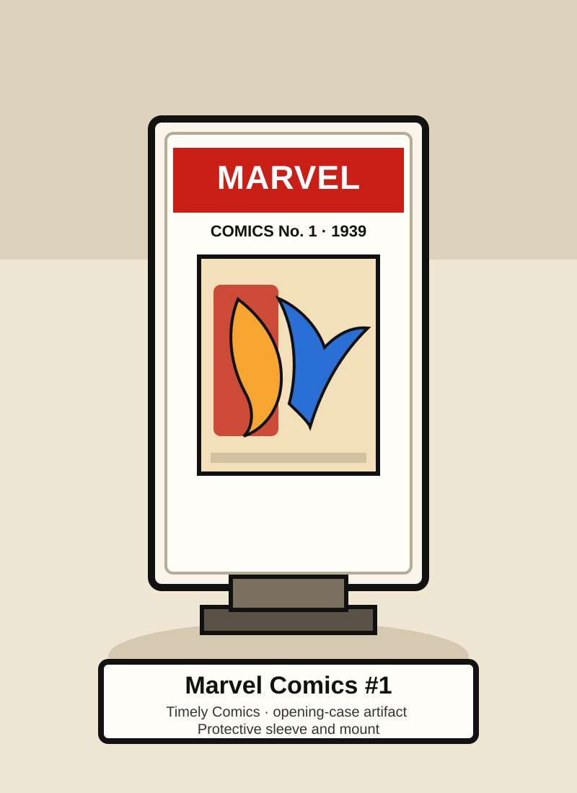
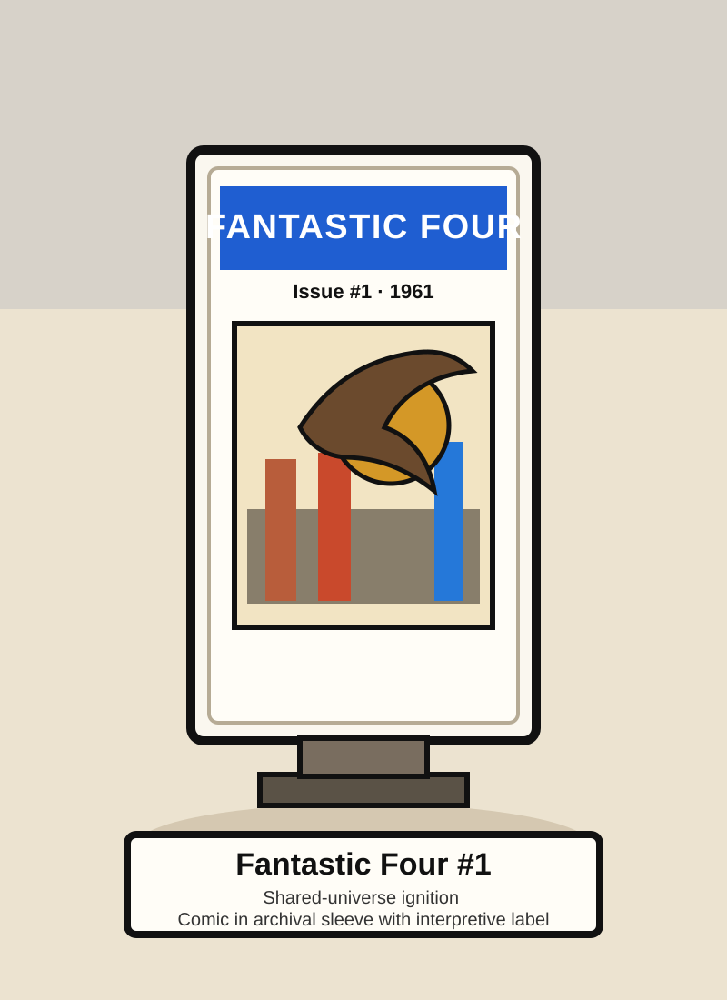
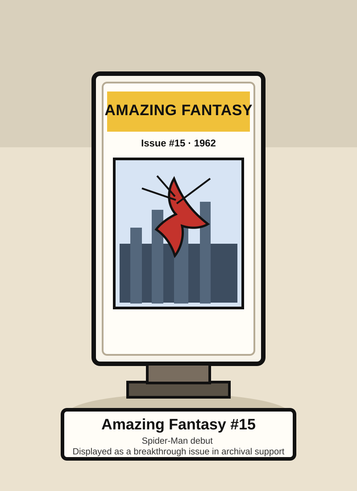
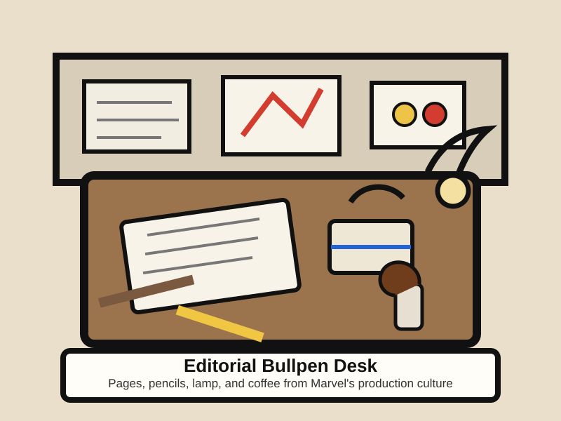
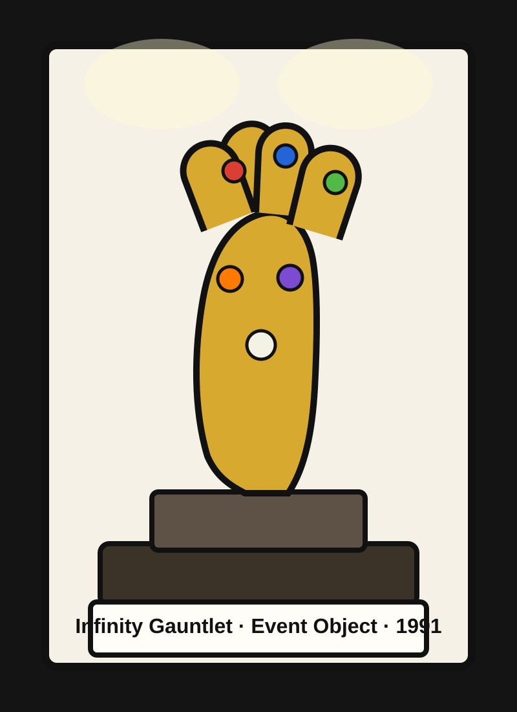
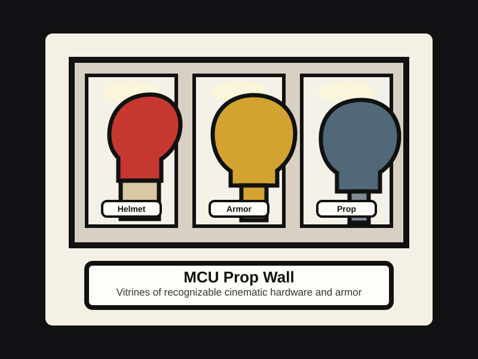

Opening gallery
Marvel Comic Book Museum
Marvel is presented here as an exhibition system: preserved issues, creator portraits, and franchise objects organized as museum evidence.

Opening object
Marvel Comics #1 · 1939
The exhibition begins with the first issue shown as a preserved object in a case, not a geometric symbol.

Reinvention object
Fantastic Four #1 · 1961
This issue marks the shift to Marvel's connected universe and gets presented like a real artifact on display.



Main route
Three rooms carry the exhibition argument.
Golden Age Origins
The exhibition begins with Timely Comics, wartime iconography, and the first preserved issues that make Marvel legible as mass culture.
Marvel Age Expansion
The middle room tracks the shared-universe breakthrough through landmark comics and the people who shaped them.
Crossover and Cinematic Age
The final room follows Marvel into event comics, cinematic props, and franchise-scale memory.
Collection rooms
Companion rooms expand the exhibition with pictures and evidence.
Publication lineage
Follow the issues that change Marvel's identity, now shown as preserved objects instead of abstract graphic markers.
People & studios
Meet publishers, artists, writers, and studio architects through portrait-style cards and production objects.
Collection highlights
See the strongest covers, editorial artifacts, and cinematic hardware together in a concentrated display wall.
Collection highlights
The site shows what it argues for.

Cinematic hardware
Prop wall · MCU era
The modern Marvel room now includes vitrines and hardware instead of abstract circles and triangles.
Editorial culture
Desk object · Marvel office life
Production culture is shown as a physical workspace with pages, tools, and layout sketches.
Continue
Start with the origin room.
Begin in the Golden Age gallery, where the first issue and the earliest publisher artifacts establish the museum's foundation.